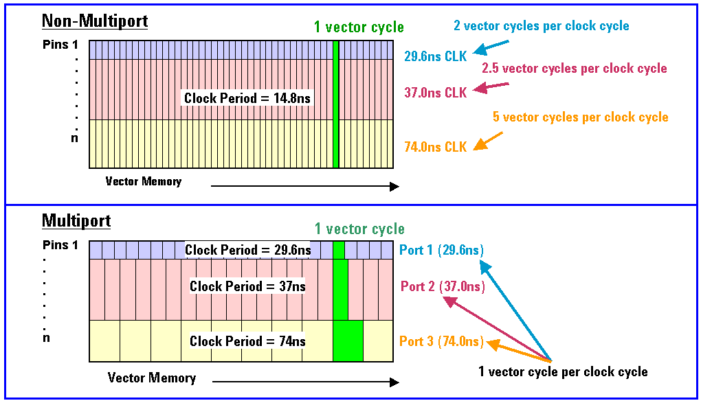

Vector Memory Reduction
On the V93000 tester, every default vector label includes sequencer information for all pins in the device as defined in the configuration file. This results in utilization of the same amount of vector memory for all defined pins in the test program.
Defining the vector ports separately using a multi-port setup results in reduction in vector memory requirements.
The reason for this is that port specific labels, used in a multi-port test program, consist of vectors which contain information and settings only for the pins used to test a particular IP core, while the remaining pins execute break vectors, hence saving memory.
Break vectors can be static or clocking. A great reduction can be seen on device clock pins which can be set to break cycles in some, if not all, of the device vectors.
The following figure illustrates a 60% saving in vector memory by using a multi-port setup.

Often a pin, within a test program, has its own functionality, but this is not an issue as every vector is treated as a stand-alone unit.
Preparing the vector port definition requires careful allocation of ports considering the device functionality and pin per core assignment.
The ASCII editor provides the required keywords for conversion to binary and executable vector ports.
The simplest and easiest way to minimize vector memory requirements is to request that the designers provide you with the control settings for activating the device in a test mode and provide simulation data for only the cores to be tested in a single test execution.
For example, activate the device for a MBIST test and obtain information on all the pins associated with this test.
It is equally important to know the status of all other device pins so that the device remains in the required mode of operation. For example, the status of the device clocking pins for continuous operation, refresh pins, etc.
The following sections describe aspects to consider for the various device pins to reduce vector memory requirements.
Functional changes
- Introduced before SmarTest 6.3.2